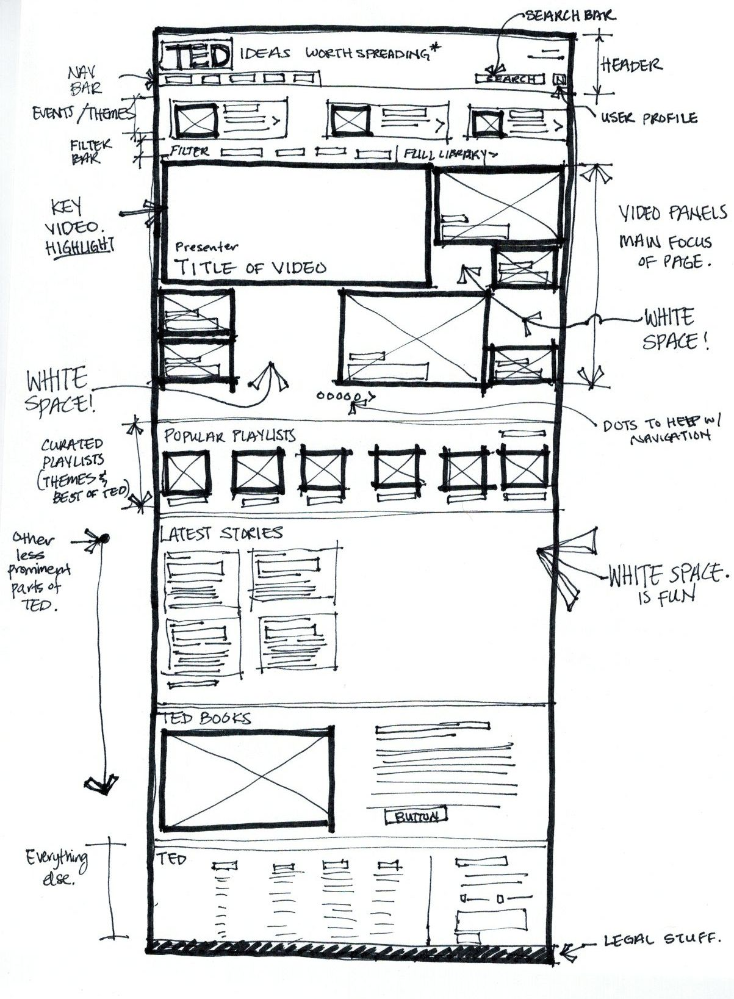

I analyzed the TED Talks website. The webpage focuses on videos. Because there are so many videos to choose from, the problem for a user is choosing which video to watch. I think that by prominently featuring the videos by letting it take up more than two-thirds of the screen is important. It gives you what they have chosen as the most popular or interesting video first, by sheer size. The title of each talk is also large and easy to read. The largest video takes up more than a quarter of that video panel. The mosiac of videos almost feels like a TV wall, and the user becomes the master of the tv remote. Then they secondary videos fill in the rest of the space (without forgetting to give it some white space so they can breathe.
Finally, there are tertiary elements such as playlists, filters, other curated themed playlists, which are other ways to grab the user's attention if the TV panels did not appeal to them. I think it's a very effective layout for what they are trying to accomplish. The downside may be that other features get overlooked, so one would have to scroll to see TED Books or TED Conferences, but I guess that only those who are very interested would find them.
